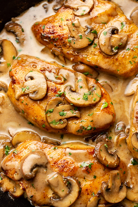
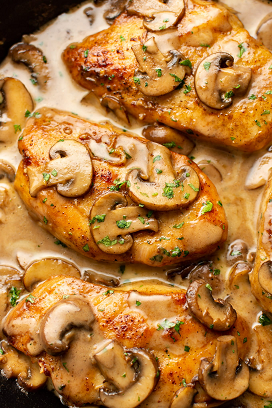
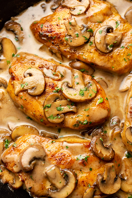
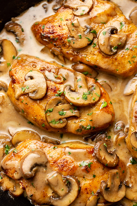

Masala Chicken
 



(per serving)
Gather all ingredients
In a shallow dish or bowl, mix together the flour, salt, pepper and oregano
Coat chicken pieces in flour mixture
In a large skillet, melt butter in oil over medium heat. Place chicken in the pan, and lightly brown
Turn over chicken pieces, and add mushrooms. Pour in wine and sherry
Cover skillet; simmer chicken 10 minutes, turning once, until no longer pink and juices run clear
Serve hot and enjoy!